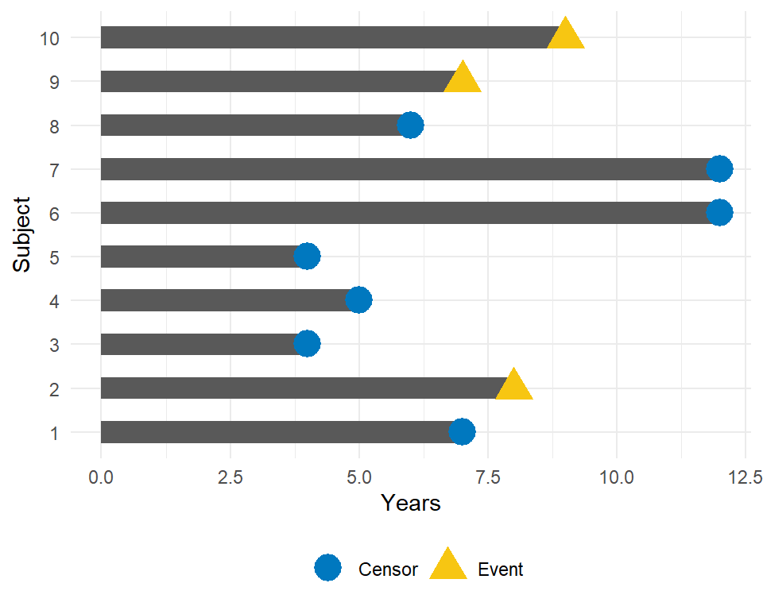
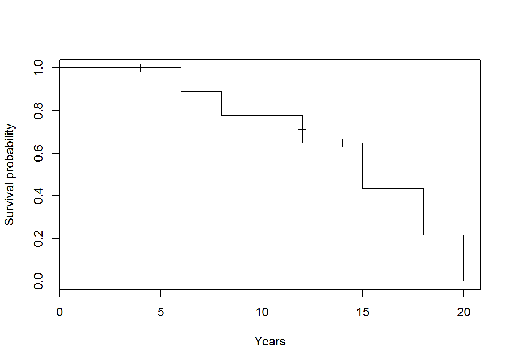
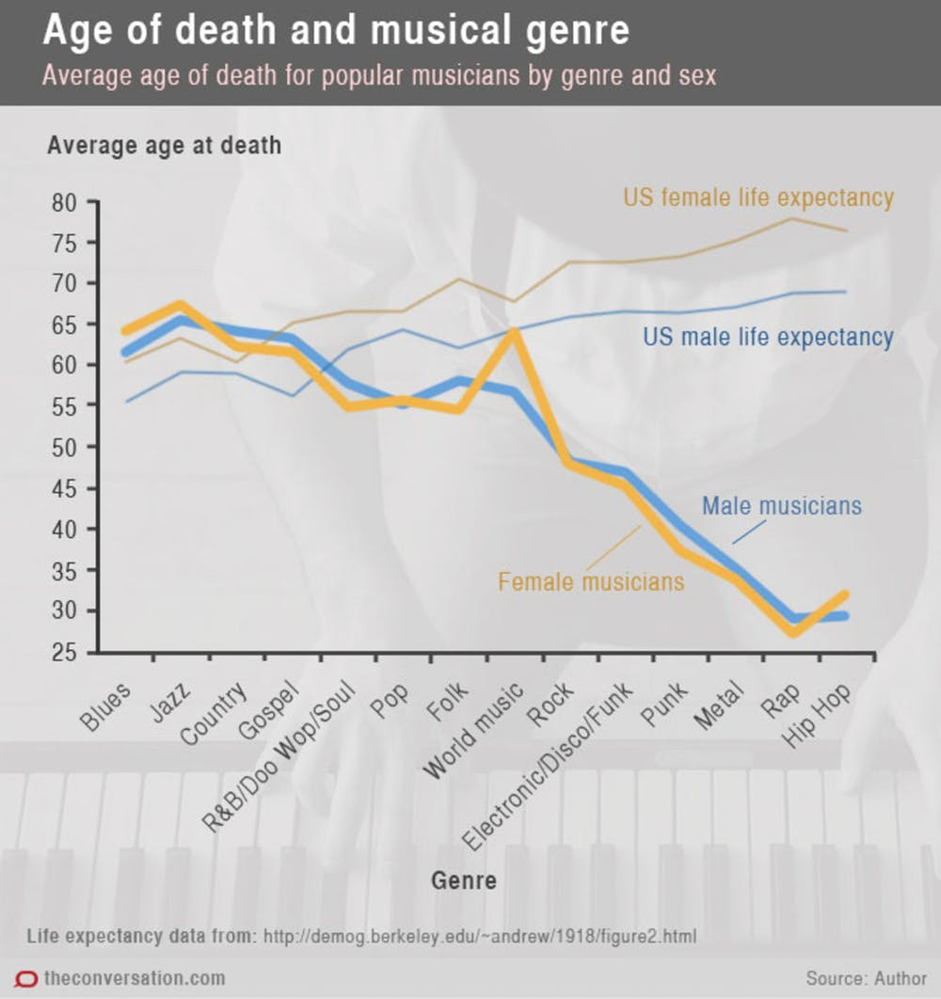
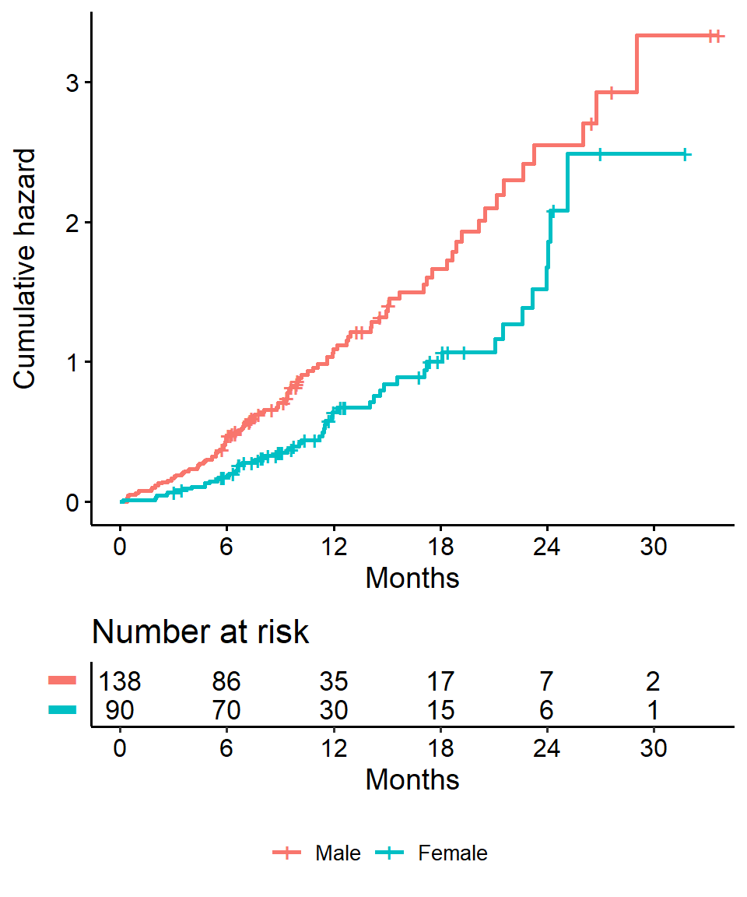
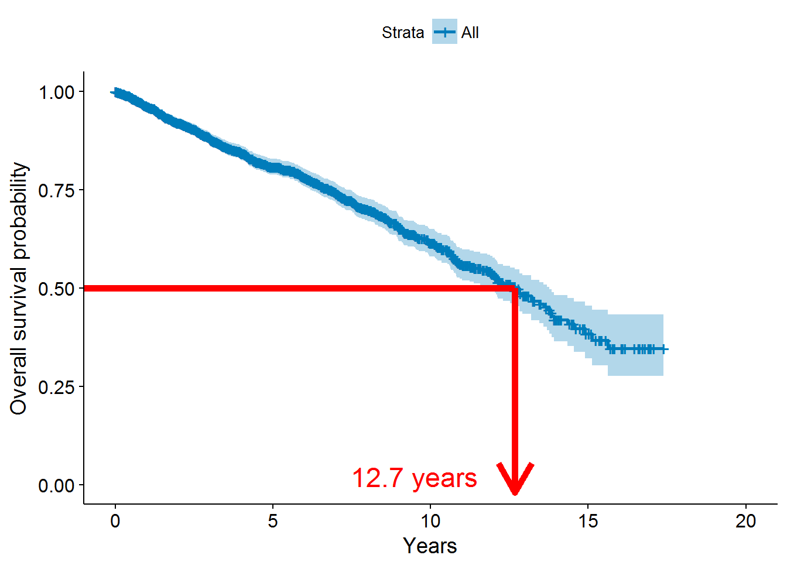
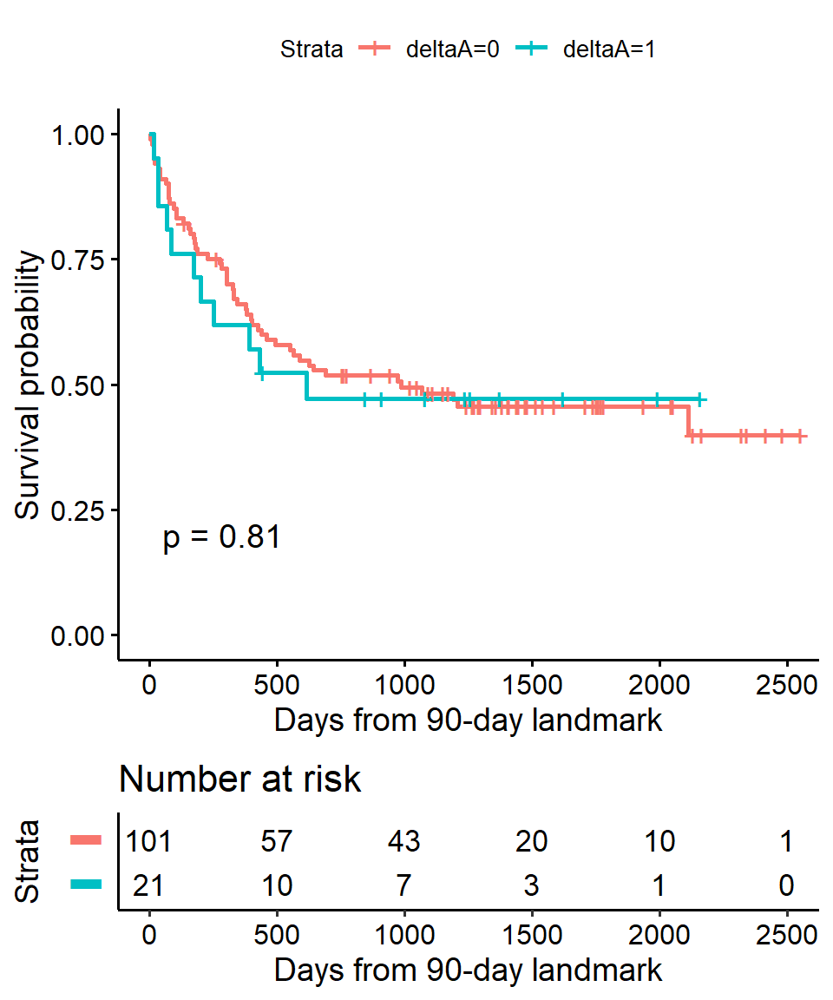

Survival Analysis in R
This tutorial provides an introduction to survival analysis, and to conducting a survival analysis in R.
This tutorial was originally presented at the Memorial Sloan Kettering Cancer Center R-Presenters series on August 30, 2018.
Introduction
What is survival data?
Time-to-event data that consists of a distinct start time and end time.
Examples from cancer:
- Time from surgery to death
- Time from start of treatment to progression
- Time from response to recurrence
Examples from other fields
Time-to-event data is common in many fields including, but not limited to:
- Time from HIV infection to development of AIDS
- Time to heart attack
- Time to onset of substance abuse
- Time to initiation of sexual activity
- Time to machine malfunction
Aliases for survival analysis
Because survival analysis is common in many other fields, it also goes by other names:
- Reliability analysis
- Duration analysis
- Event history analysis
- Time-to-event analysis
Questions of interest
The two most common questions I encounter related to survival analysis are:
- What is the probability of survival to a certain point in time?
- What is the average survival time?
Censoring
What is censoring?
In survival analysis it is common for the exact event time to be unknown, or unobserved, which is called censoring. A subject may be censored due to:
- Loss to follow-up
- Withdrawal from study
- No event by end of fixed study period
Specifically these are examples of right censoring. Other common types of censoring include:
- Left
- Interval
Censored survival data
When the exact event time is unknown then some patients are censored, and survival analysis methods are required.

In this example, how would we compute the proportion who are event-free at 10 years?
- Subjects 2, 3, 5, 6, 8, 9, and 10 were all event-free at 10 years.
- Subjects 4 and 7 had the event before 10 years.
- Subject 1 was censored before 10 years, so we don’t know whether they had the event or not by 10 years. How do we incorporate this subject into our estimate?
We can incorporate censored data using survival analysis techniques
Toy example of a Kaplan-Meier curve for this simple data (details to follow):

- Horizontal lines represent survival duration for the interval
- An interval is terminated by an event
- The height of vertical lines show the change in cumulative probability
- Censored observations, indicated by tick marks, reduces the cumulative survival between intervals
Danger of ignoring censoring
Case study: musicians and mortality
Conclusion: Musical genre is associated with early death among musicians.
Problem: this graph does not account for the right-censored nature of the data.

Components of survival data
For subject \(i\):
- Event time \(T_i\)
- Censoring time \(C_i\)
Event indicator \(\delta_i\):
- 1 if event observed (i.e. \(T_i \leq C_i\))
- 0 if censored (i.e. \(T_i > C_i\))
Observed time \(Y_i = \min(T_i, C_i)\)
Data example
Research question of interest
Investigating the “obesity paradox” in kidney cancer patients.
- Increased BMI associated with risk of kidney cancer
- Is increased BMI also associated with worse prognosis among kidney cancer patients?
Data structure
- 2119 kidney cancer patients
- Outcome: overall survival
- Predictor: BMI
df[, c("os_yrs", "os", "bmi_cat")] %>%
head## os_yrs os bmi_cat
## 1 1.569863 1 3
## 2 10.243701 0 2
## 3 3.945205 1 2
## 4 3.326027 1 2
## 5 8.547945 0 3
## 6 10.180313 0 3Variables:
- “os_yrs”: the observed time \(Y_i = min(T_i, C_i)\)
- “os”: the event indicator \(\delta_i\)
- “bmi_cat”: 1 = Normal BMI < 25, 2 = Overweight BMI 25-30, 3 = Obese BMI > 30
Preparing data for analysis
Dates
Data will often come with start and end dates rather than pre-calculated survival times. Our data example includes the following variables:
- “proc_date”: Date of surgery
- “last_status_date”: Date of death or last follow-up
- “last_status”: Character variable denoting whether the patient is alive, and the cause of death if dead
The first step is to make sure these are formatted as dates in R.
Formatting dates - base R
First let’s look at the current format of our surgery date:
str(df$proc_date)## chr [1:2119] "20NOV1997" "22OCT2001" "21FEB2003" "04MAR2002" ...We see this is a character variable in a certain format, but we need it to be formatted as a Date.
df <- df %>%
mutate(proc_date_format1 = as.Date(proc_date, format = "%d%b%Y"))And after formatting we see that surgery date has Date format now:
str(df$proc_date_format1)## Date[1:2119], format: "1997-11-20" "2001-10-22" "2003-02-21" "2002-03-04" "2001-11-19" ...Note that in base R the format must include the separator as well as the symbol. e.g. if your date is in format m/d/Y then you would need
format = "%m/%d/%Y"See a full list of date format symbols at https://www.statmethods.net/input/dates.html
Formatting dates - lubridate
We can also use the lubridate package to format dates. Again we look at our original surgery date variable:
str(df$proc_date)## chr [1:2119] "20NOV1997" "22OCT2001" "21FEB2003" "04MAR2002" ...And now use the lubridate::dmy function to format this into a Date:
df <- df %>%
mutate(proc_date_format2 = lubridate::dmy(proc_date))And again we see that R now recognizes surgery date as a Date format:
str(df$proc_date_format2)## Date[1:2119], format: "1997-11-20" "2001-10-22" "2003-02-21" "2002-03-04" "2001-11-19" ...The help page for
?ymdwill show all format options.Note that unlike the base R option, the separators do not need to be specified
Event indicator
Most functions used in survival analysis will also require a binary indicator of event that is:
- 0 for no event
- 1 for event
Currently our data example contains a character variable indicating whehter the patient is alive, and if not indicating the cause of death, so we must create a binary indicator.
table(df$last_status, useNA = 'ifany')##
## Alive Death from Kidney Cancer
## 1643 244
## Death from Other Cause Death from Unknown Causes
## 202 30df <- df %>%
mutate(os_event = ifelse(last_status == "Alive", 0, 1))
table(df$os_event)##
## 0 1
## 1643 476Calculating survival times - base R
Now that we have our dates formatted, we need to calculate the difference between start and end time in some units, usually months or years.
A base R solution to calculate the number of years from surgery to death:
df <- df %>%
mutate(os_yrs_opt1 = as.numeric(difftime(last_status_date, proc_date,
units = "days")) / 365.25)summary(df$os_yrs_opt1)## Min. 1st Qu. Median Mean 3rd Qu. Max.
## 0.002738 1.689254 3.786448 4.774907 7.137577 17.396304Here we use
difftimeto calculate the number of days between our two dates and convert it to a numeric value usingas.numeric. We then convert to years by dividing by 365.25, the average number of days in a year.Sidenote: the >0 nature of survival times is another reason why standard regression techniques such as linear regression would not be an appropriate way to analyze time-to-event data
Calculating survival times - lubridate
We can also use the lubridate package to calculate the number of years from surgery to death:
library(lubridate)
df <- df %>%
mutate(os_yrs_opt2 =
as.duration(proc_date %--% last_status_date) /
dyears(1))summary(df$os_yrs_opt2)## Min. 1st Qu. Median Mean 3rd Qu. Max.
## 0.00274 1.69041 3.78904 4.77818 7.14247 17.40822- Here the operator
%--%is used to designate a time interval, which is then converted to the number of elapsed seconds usingas.durationand finally converted to years by dividing bydyears(1), which gives the number of seconds in a year. - If you look closely you will see the result differs slightly from the previous result due to rounding differences, but nothing that would impact our results
- Note: we need to load the
lubridatepackage using a call tolibraryin order to be able to access the special operators (similar to situation with pipes)
Analyzing survival data
Questions of interest
Recall the questions of interest:
- What is the probability of surviving to a certain point in time?
- What is the average survival time?
Creating survival objects
The Kaplan-Meier method is the most common way to estimate survival times and probabilities. It is a non-parametric approach that results in a step function, where there is a step down each time an event occurs.
- The
Survfunction from thesurvivalpackage creates a survival object for use as the response in a model formula. There will be one entry for each subject that is the survival time, which is followed by a+if the subject was censored. Let’s look at the first 10 observations:
survival::Surv(df$os_yrs, df$os)[1:10]## [1] 1.569863 10.243701+ 3.945205 3.326027 8.547945+ 10.180313+
## [7] 5.013699+ 9.520548+ 8.117808 4.805479+Estimating survival curves with the Kaplan-Meier method
- The
survival::survfitfunction creates survival curves based on a formula. Let’s generate the overall survival curve for the entire cohort, assign it to objectf1, and look at thenamesof that object:
f1 <- survival::survfit(survival::Surv(os_yrs, os) ~ 1, data = df)
names(f1)## [1] "n" "time" "n.risk" "n.event" "n.censor"
## [6] "surv" "type" "std.err" "lower" "upper"
## [11] "conf.type" "conf.int" "call"Some key components of this survfit object that will be used to create survival curves include:
time, which contains the start and endpoints of each time intervalsurv, which contains the survival probability corresponding to eachtime
Kaplan-Meier plot - base R
Now we plot the survfit object in base R to get the Kaplan-Meier plot:
plot(survival::survfit(survival::Surv(os_yrs, os) ~ 1, data = df),
xlab = "Years",
ylab = "Overall survival probability")
- The default plot in base
Rshows the step function (solid line) with associated confidence intervals (dotted lines). Note that the tick marks for censored patients are not shown by default, but could be added usingmark.time = TRUE
Kaplan-Meier plot - ggsurvplot
Alternatively, the ggsurvplot function from the survminer package is built on ggplot2, and can be used to create Kaplan-Meier plots:
survminer::ggsurvplot(
fit = survival::survfit(survival::Surv(os_yrs, os) ~ 1, data = df),
xlab = "Years",
ylab = "Overall survival probability")
- The default plot using
survminer::ggsurvplotshows the step function (solid line) with associated confidence bands (shaded area). The tick marks for censored patients are shown by default, somewhat obscuring the line itself in this example, and could be supressed usingcensor = FALSE
Estimating \(x\)-year survival
One quantity often of interest in a survival analysis is the probability of surviving a certain number (\(x\)) of years.
For example, to estimate the probability of survivng to 5 years, use summary with the times argument:
summary(survival::survfit(survival::Surv(os_yrs, os) ~ 1, data = df),
times = 5)## Call: survfit(formula = survival::Surv(os_yrs, os) ~ 1, data = df)
##
## time n.risk n.event survival std.err lower 95% CI upper 95% CI
## 5 854 297 0.808 0.0104 0.788 0.828We find that the 5-year probability of survival in this study is 81%. The associated lower and upper bounds of the 95% confidence interval are also displayed.
\(x\)-year survival and the survival curve
The 5-year survival probability is the point on the y-axis that corresponds to 5 years on the x-axis for the survival curve.

\(x\)-year survival is often estimated incorrectly
What happens if you use a “naive” estimate?
297 of the 2119 patients died by 5 years so:
\[\Big(1 - \frac{297}{2119}\Big) \times 100 = 86\%\]
You get an incorrect estimate of the 5-year probability of survival when you ignore the fact that 968 patients were censored before 5 years.
Recall the correct estimate of the 5-year probability of survival was 81%.
Estimating median survival time
Another quantity often of interest in a survival analysis is the average survival time, which we quantify using the median (survival times are not expected to be normally distributed so the mean is not an appropriate summary).
We can obtain this directly from our survfit object:
survival::survfit(survival::Surv(os_yrs, os) ~ 1, data = df)## Call: survfit(formula = survival::Surv(os_yrs, os) ~ 1, data = df)
##
## n events median 0.95LCL 0.95UCL
## 2119.0 476.0 12.7 11.9 13.8We see the median survival time is 12.7 years. The lower and upper bounds of the 95% confidence interval are also displayed.
Median survival time and the survival curve
Median survival is the time corresponding to a survival probability of 0.5:

Median survival is often estimated incorrectly
What happens if you use a “naive” estimate?
Summarize the median survival time among the 476 patients who died:
df$os_yrs[df$os == 1] %>%
median## [1] 3.493046You get an incorrect estimate of median survival time of 3.5 years when you ignore the fact that censored patients also contribute follow-up time.
Recall the correct estimate of median survival time is 12.7 years.
Comparing survival times between groups
Questions of interest with respect to between-group differences
Is there a difference in survival probability between groups?
From our example: does the probability of survival differ according to BMI among kidney cancer patients?
Kaplan-Meier plot by group
We can add a covariate to the right-hand side of the survival::survfit object to obtain a stratified Kaplan-Meier plot.
Let’s also look at some other customization we can do with survminer::ggsurvplot.
survminer::ggsurvplot(
fit = survival::survfit(survival::Surv(os_yrs, os) ~ bmi_cat, data = df),
xlab = "Years",
ylab = "Overall survival probability",
legend.title = "BMI",
legend.labs = c("Normal", "Overweight", "Obese"),
break.x.by = 5,
palette = ezfun::msk_palette("contrast"),
censor = FALSE,
risk.table = TRUE,
risk.table.y.text = FALSE)
- By looking at the curves, we can see that normal BMI patients have the lowest overall survival probability, followed by overweight BMI patients and obese BMI patients.
- The risk table below the plot shows us the number of patients at risk at certain time points, which can give an idea of how much information is being used to calculate the estimates at each time
\(x\)-year survival probability by group
As before, we can get an estimate of, for example, 5-year survival by using summary with the times argument in our survival::survfit object:
summary(survival::survfit(survival::Surv(os_yrs, os) ~ bmi_cat, data = df),
times = 5)## Call: survfit(formula = survival::Surv(os_yrs, os) ~ bmi_cat, data = df)
##
## bmi_cat=1
## time n.risk n.event survival std.err
## 5.0000 166.0000 88.0000 0.7288 0.0253
## lower 95% CI upper 95% CI
## 0.6808 0.7802
##
## bmi_cat=2
## time n.risk n.event survival std.err
## 5.0000 335.0000 114.0000 0.8094 0.0166
## lower 95% CI upper 95% CI
## 0.7775 0.8426
##
## bmi_cat=3
## time n.risk n.event survival std.err
## 5.0000 353.0000 95.0000 0.8476 0.0149
## lower 95% CI upper 95% CI
## 0.8188 0.8773To summarize:
| BMI | 5-year estimate (95% CI) |
|---|---|
| Normal | 0.73 (0.68-0.78) |
| Overweight | 0.81 (0.78-0.84) |
| Obese | 0.85 (0.82-0.88) |
Log-rank test for between-group significance test
- We can conduct between-group significance tests using a log-rank test.
- The log-rank test equally weights observations over the entire follow-up time and is the most common way to compare survival times between groups.
- There are versions that more heavily weight the early or late follow-up that could be more appropriate depending on the research question.
We get the log-rank p-value using the survival::survdiff function:
survival::survdiff(survival::Surv(df$os_yrs, df$os) ~ df$bmi_cat)## Call:
## survival::survdiff(formula = survival::Surv(df$os_yrs, df$os) ~
## df$bmi_cat)
##
## N Observed Expected (O-E)^2/E (O-E)^2/V
## df$bmi_cat=1 420 132 100 9.9411 12.6414
## df$bmi_cat=2 806 182 184 0.0171 0.0279
## df$bmi_cat=3 893 162 192 4.6359 7.7841
##
## Chisq= 14.6 on 2 degrees of freedom, p= 7e-04And we see that the p-value is <.001, indicating a significant difference in overall survival according to BMI.
Regression
The Cox regression model
We may want to quantify an effect size for a single variable, or include more than one variable into a regression model to account for the effects of multiple variables.
The Cox regression model is a semi-parametric model that can be used to fit univariable and multivariable regression models that have survival outcomes.
Some key assumptions of the model:
- non-informative censoring
- proportional hazards
Note: parametric regression models for survival outcomes are also available, but I won’t cover them in detail here.
Cox regression example using a single covariate
We can fit regression models for survival data using the survival::coxph function, which takes a survival::Surv object on the left hand side and has standard syntax for regression formulas in R on the right hand side.
survival::coxph(survival::Surv(os_yrs, os) ~ factor(bmi_cat), data = df)We can see a tidy version of the output using the tidy function from the broom package:
broom::tidy(survival::coxph(survival::Surv(os_yrs, os) ~ factor(bmi_cat),
data = df))## term estimate std.error statistic p.value conf.low
## 1 factor(bmi_cat)2 -0.2844188 0.1144802 -2.484436 0.0129756683 -0.5087958
## 2 factor(bmi_cat)3 -0.4441733 0.1174706 -3.781144 0.0001561095 -0.6744115
## conf.high
## 1 -0.0600417
## 2 -0.2139351Hazard ratios
The quantity of interest from a Cox regression model is a hazard ratio (HR).
If you have a regression parameter \(\beta\) (from column estimate in our survival::coxph) then HR = \(\exp(\beta)\).
For example, from our example we obtain the regression parameter \(\beta_1=-0.4441733\) for obese vs normal BMI, so we have HR = \(\exp(\beta_1)=0.64\).
A HR < 1 indicates reduced hazard of death whereas a HR > 1 indicates an increased hazard of death.
So we would say that obese BMI kidney cancer patients have 0.64 times reduced hazard of death as compared to normal BMI kidney cancer patients.
Summary
- Time-to-event data is common
- Survival analysis techniques are required to account for censored data
- The
survivalpackage provides tools for survival analysis, including theSurvandsurvfitfunctions - The
survminerpackage allows for customization of Kaplan-Meier plots based onggplot2 - Between-group comparisons can be made with the log-rank test using
survival::survdiff - Multiavariable Cox regression analysis can be accomplished using
survival::coxph